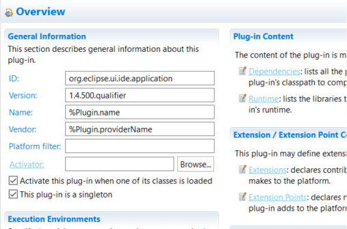
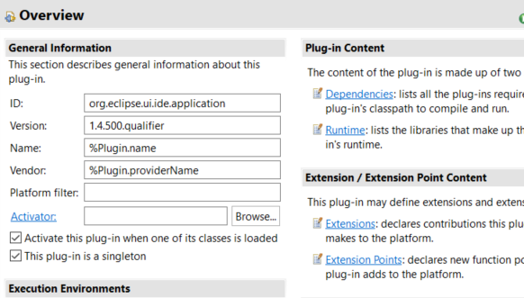
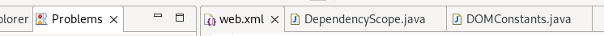
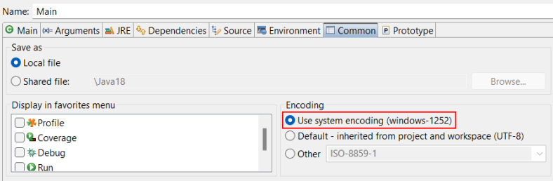
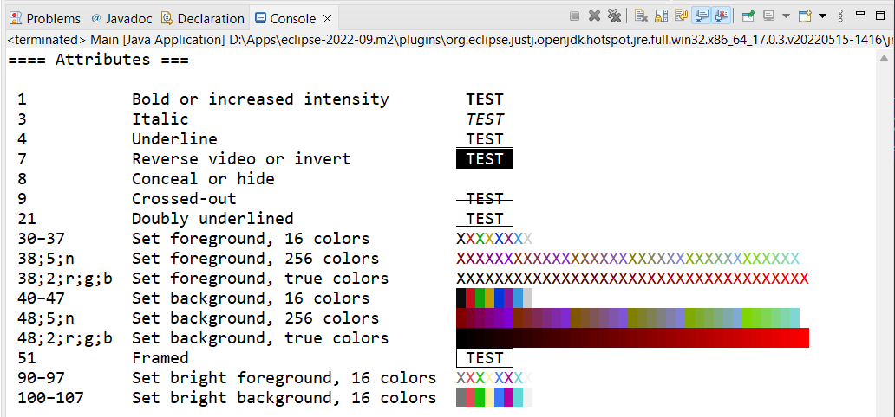
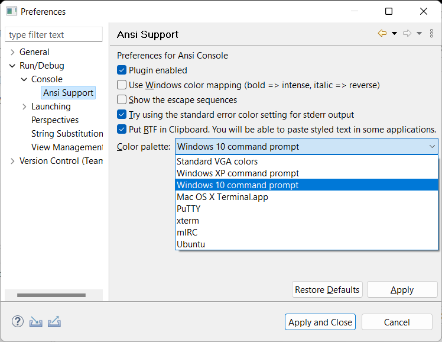

Views, Dialogs and Toolbar
Text Editors
Preferences
Themes and Styling
Old look:
New look:
Example showing the workbench with theming disabled:
Old look:
New look:

Debug
See Common tab in Debug Configuration dialog as shown below:

API Notes: If DebugPlugin.ATTR_FORCE_SYSTEM_CONSOLE_ENCODING attribute is set,
ILaunchManager.getEncoding(ILaunchConfiguration)
will return the value of Platform.getSystemCharset() and
ILaunchConfiguration.getAttribute(DebugPlugin.ATTR_CONSOLE_ENCODING, null)
will return null, indicating that default system value should be used.
It supports 16 colors / 256 colors / true-colors for foreground and background, color palettes, and attributes like bold, italic, underline, invert, conceal, strike, crossed-out, framed:

Only "CSI n m"
(SGR,
Select Graphic Rendition) control sequences are supported.
They set display attributes, but cannot be used to change the content of the output
(erase actions, cursor positioning, scrolling).
Non-SGR sequences are not interpreted, but are recognized and hidden, so you will not see them.
This functionality is available for all the text output to the standard output or standard error. It works for Java, C/C++, Perl, Python, shell, Groovy, Maven or any Eclipse supported language.
Preferences are available under Preferences > Run/Debug > Console > ANSI Support.
